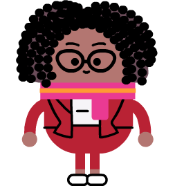

<div>
  <!-- Instructions -->
  <div id="prompt">
      Here we are backstage, where our creative crew is already hard at work. It looks like they’ve found their first primary source, but there seems to be some confusion about what they should do with it.
  </div>

  <!-- Game -->
  <div id="game">

    <!-- Melody -->
    
    <!-- Feedback -->
    <div id ="feedback" class="one-line">
    </div>


    <div>
      <!-- Primary Source Viewer -->
      <div class="source-title sorted" id="title">
        SOURCE
      </div>
      
      <div class="source-container sorted">
      </div>

      <!-- ORQ containers -->
      <input type="button" name="observationButton" id="observation" class="container sorted o" aria-label="classify as observation">
      <div class="orq sorted o">
        Observation
      </div>
      <input type="button" name="reflectionButton" id="reflection" class="container sorted r" aria-label="classify as reflection">
      <div class="orq sorted r" >
        Reflection
      </div>
      <input type="button" name="questionButton" id="question" class="container sorted q" aria-label="classify as question">
      <div class="orq sorted q">
        Question
      </div>
    </div>

    <!-- Characters and Dialog -->
    <div id="speaker-container" class="sorted">
      <div id="speaker" class="sorted">
      </div>
    </div>

    <div id="speech-bubble" class="tail sorted">
    </div>
    <div class= "character-container">
      
      
      
      
      
      
    </div>
  </div>

  <!-- Final Feedback Page -->
  <div id="orq-review" style="display: none;">
    <table>
      <tr align="center">
        <th style="background: #013366;">Observation</th>
        <th style="background: #03713F;">Reflection</th>
        <th style="background: #660F3A;">Question</th>
      </tr>
      <tr id="row">
        <td class="col1"> </td>
        <td class="col2"> </td>
        <td class="col3"> </td>
      </tr>
    </table>
  </div>
  <div id="melody" class="final" style="display: none;">
    
    <div class="spot">
    </div>
  </div>
</div>
